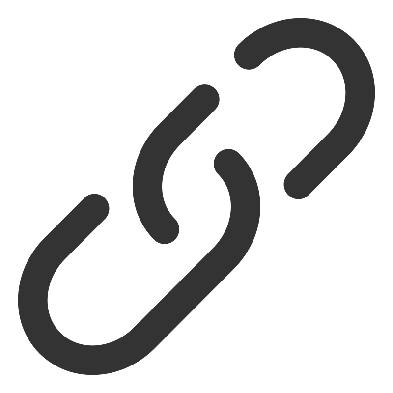

Kayıt olmadan sosyal medya içeriğini veya dosyanı analiz ettirebilirsin.

Tek Seferlik Analizveya
Desteklenen formatlar: .txt, .csv
Daha detaylı analizler ve düzenli takip için hesabını bağlayabilir, düzenli veya düzensiz modları keşfedebilirsin. Bu özelliklerden yararlanmak için Giriş Yap.